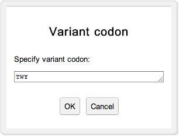

GeneGenie, a new online tool, is introduced to support the design of synthetic genes and constructs. GeneGenie allows for the design of oligonucleotides encoding the gene sequence optimised for expression in any suitable host through an intuitive, easy-to-use web interface. The tool ensures consistent oligomer overlap melting temperatures, minimises the likelihood of misannealing, optimises codon usage for expression in a selected host, allows for specification of forward and reverse cloning sequences (for downstream ligation) and also provides support for mutagenesis or directed evolution studies.
Output oligomers can be assembled using PCR-based methods, and are fully compatible with our own optimised gene synthesis protocol developed alongside GeneGenie. These methods provide highly efficient assembly, permitting expression and functional analysis of genes up to 2 kilobases in length before sequence verification. This represents a significant improvement over currently established gene synthesis methods.
Using this integrated wet- and dry-lab approach, the successful synthesis and direct assay of green fluorescent protein (GFP) is demonstrated. Novelties of this approach include the specification of forward and reverse cloning sequences, facilitating the ligation of the designed gene into a vector and its subsequent expression, and the optional specification of "variant codons" at given positions. These variant codons may include degenerate bases, in addition to the four bases A, C, G, and T. Specification of codons including degenerate bases allow for variant sequences to be constructed, supporting directed evolution studies through the generation of variant libraries. For example, specifying the variant codon NTN (where N is any nucleotide) will encode a mixture of the amino acids Phe, Leu, Ile, Met and Val at that position.
Add a title for the query. This is a free text field, which will be associated with the GeneGenie query that is being performed.
This title will be propagated to the results, and will be used to name the designed oligos, and can therefore be useful in tracking oligomer orders with manufacturers.
This field is optional.
Specify the DNA cloning sequence that will be used to ligate the forward sequence into the vector. This sequence will be inserted at the 5' end of the gene.
This should be a sense strand sequence (reading 5' to 3') and not a reverse or compliment sequence.
Hint: Ensure that the gene will be in the correct reading frame after cloning. Does the sequence require a starting methionine?
This field is optional.
Specify a search term for searching the UniProt database.
Upon completion of the search, the user will be prompted with a list of UniProt entries, from which one can be selected. Doing so will automatically fill the Protein sequence field, below. (See Protein sequence).
Use of this field is optional, but the specification of a protein sequence is compulsory. (See Protein sequence).
Specify the sequence of the protein which is to be designed.
Only valid amino acid single-letter codes may be input.
This field may be filled automatically as a result of a UniProt search, above. (See Search UniProt).
This field is compulsory.
A unique feature of GeneGenie is the facility to specify "variant codons" at given positions. These variant codons may include degenerate bases, in addition to the four bases A, C, G, and T. Specification of codons including degenerate bases allow for variant sequences to be constructed, supporting directed evolution studies through the generation of variant libraries. For example, specifying the variant codon NTN (where N is any nucleotide) will encode a mixture of the amino acids Phe, Leu, Ile, Met and Val at that position.
In order to specify a variant codon, highlight a single residue and right-click. This will bring up a menu with two options: Add Variant Codon and Remove Variant Codon. Selecting Add Variant Codon will bring up the following dialog box, allowing a variant codon to be specified at this position:

A variant codon can be specified, using either specific bases (A, C, G, T) or degenerate bases, which encode a mixture of specific bases:
| Symbol | Description | Bases represented | ||||
|---|---|---|---|---|---|---|
| A | adenine | A | ||||
| C | cytosine | C | ||||
| G | guanine | G | ||||
| T | thymine | T | ||||
| W | weak | A | T | |||
| S | strong | C | G | |||
| M | amino | A | C | |||
| K | keto | G | T | |||
| R | purine | A | G | |||
| Y | pyrimidine | C | T | |||
| B | not A (B comes after A) | C | G | T | ||
| D | not C (D comes after C) | A | G | T | ||
| H | not G (H comes after G) | A | C | T | ||
| V | not T (V comes after T and U) | A | C | G | ||
| N | any base (not a gap) | A | C | G | T | |
Consequently, specifying a codon of TST will generate a mixture of TCT
and TGT codon at that position, and therefore encode either Ser or Cys at that position.
Specify the DNA cloning sequence that will be used to ligate the reverse sequence into the vector. This sequence will be inserted at the 3' end of the gene.
This should be a sense strand sequence (reading 5' to 3') and not a reverse or compliment sequence.
Hint: Does the construct require a stop codon (e.g TAA) after the gene?
This field is optional.
Specify the maximum length of the designed oligos.
This field is compulsory.
Specified a preferred melting temperature for annealing overlaps.
Note that specifying a higher melting temperature will produce a solution with longer overlaps.
This field is compulsory.
Specify the Na+ concentration in M.
This field is mandatory, and requires values between 0 and 1.
Specify the K+ concentration in M.
This field is mandatory, and requires values between 0 and 1.
Specify the Tris (THAM, tris(hydroxymethyl)aminomethane) concentration in M.
This field is mandatory, and requires values between 0 and 1.
Specify the Mg2+ concentration in M.
This field is mandatory, and requires values between 0 and 1.
Specify the dNTP concentration in M.
This field is mandatory, and requires values between 0 and 1.
Select the host organism in which the oligos will be expressed.
This value must be selected from one of the options provided in the autofill box.
This field is compulsory.
Specify the number of iterations for the optimisation algorithm to take.
Improved results may be generated by specifying a larger number than the default of 10000, but this will result in longer running times.
This field is compulsory.
Specify the maximum number of repeating nucleotides that may be present in the optimised DNA sequence.
Specifying a value of 5 will prevent solutions with six or more repeating nucleotides (e.g. AAAAAA).
Preventing long stretched of repeating nucleotides will benefit ligation of the designed oligomers and will aid subsequent sequencing of the optimised DNA if required.
This field is compulsory, and must be greater than 3.
Specify the codon mutation rate.
Specifying a value of 0.01 will result in, on average, mutation of 1% of all codons per iteration of the algorithm.
For example, with a protein sequence of length 300 amino acids, a codon mutation rate of 0.01 will result in, on average, 3 codon mutations per iteration.
This field is compulsory, and must be between 0 and 1.
Specify the oligo length mutation rate.
In order to optimise codon lengths to ensure consistent melting temperatures of overlapping regions, and to maximise the number of requested "Wibble" sites that fall in non-overlapping regions (and can therefore be varied for directed evolution studies), oligo lengths are mutated by the algorithm.
Specifying a value of 0.01 will result in, on average, mutation of 1% of all oligo lengths per iteration of the algorithm.
Oligo lengths which are selected to be mutated are varied by +/- 10 nucleotides, taken randomly from a uniform distribution.
For example, specifying an oligo length mutation rate of 0.02 will result in, on average, the mutation of 1 oligo from an optimised solution of 50 oligomers per iteration.
This field is compulsory, and must be between 0 and 1.
Displays the full alignment of the designed oligomers which make up the gene.
The directionality of the oligos (forward or reverse) are indicated by arrows. Cloning sequences (both forward and reverse) are underlined.
Overlapping regions are highlighted in light blue, and contain a tooltip which allows the melting temperature of the overlap to be displayed by holding the mouse over the overlap.
Requested variant codons are highlighted in bold, and are coloured either green or red. Green variant codons are those which were successfully optimised to be in non-overlapping regions of the oligos. Red variant codons are those which are found in overlapping regions and can therefore not be specified. In these cases, a codon encoding the original amino acid will have been selected.
Displays the number of variant codons that have been retained in the optimised sequence.
GeneGenie attempts to optimise the oligomer lengths such that requested variant codon sites are placed in non-overlapping regions of the oligos. Those variant codons that are placed in non-overlapping regions are retained. These are displayed in green on the Alignment display.
Requested variant codons that cannot placed in overlapping regions cannot be specified. In these cases, a codon encoding the original amino acid will have been selected. These are displayed in red on the Alignment display.
Codon Adaptation Index (CAI) measures the deviation of the optimised DNA sequence with respect to a reference set of highly expressed genes, which is specific to the selected host organism.
CAI provides an indication of gene expression level under the assumption that there is translational selection to optimize gene sequences according to their expression levels. Consequently, GeneGenie will attempt to optimise the DNA sequence to favour codons that are found in highly expressed genes.
CAI ranges from 0 to 1, with a CAI of 1 representing a sequence containing only the most frequently observed codons in highly expressed genes.
Sharp PM, Li WH. "The codon Adaptation Index--a measure of directional synonymous codon usage bias, and its potential applications" Nucleic Acids Res. 1987, 15:1281–95. PubMed.
This table lists all oligomers designed by the GeneGenie run.
The table includes oligo number, name, whether the oligo is Forward or Reverse, the oligo sequence and the oligo length.
Buttons to the right of the table allow this data to be exported a number of formats:
The mean melting temperature (Tm) in \u00b0C of all overlapping regions.
A chart displaying the melting temperatures (Tm) in \u00b0C of each of the overlapping regions.
Holding the mouse over each value will display the calculated melting temperature for a given overlapping region.
The complete optimised DNA Sequence encoding the requested protein.
Provides a temporary link to the results of this job, which may be bookmarked for future use.
Results will be accessible upon completion of the job. Failure to show the results may be due to the job not being completed, experiencing an error, or the results having been deleted.
Note: The results link facility provides a temporary link to the results, which may subsequently be deleted. The developers of GeneGenie take no responsibility for the storage of results and their subsequent accessibility.